MeshLab is an open source, portable, and
extensible system for the processing and editing of unstructured 3D triangular
meshes.
The system is aimed to help the processing of
the typical not-so-small unstructured models arising in 3D scanning, providing a
set of tools for editing, cleaning, healing, inspecting, rendering and
converting this kind of meshes.
The system is heavily based on
the VCG library
developed at the
Visual Computing Lab of ISTI - CNR,
for all the core mesh processing tasks and it is available for Windows, MacOSX, and Linux.
.
The MeshLab system started in late 2005 as a part of the FGT course of the Computer Science
department of University of Pisa and most of the code (~15k lines) of the first
versions was written by a handful of willing students. The following years FGT students have continued to work to this project implementing more and more features.
The proud MeshLab developers are listed here.
This project is actively supported by the 3D-CoForm project.
Other projects that have previously supported MeshLab are listed here.
Download Latest Version (15 February 2011) V1.3.0 (changes)
Remember that, whenever you use MeshLab in a official/commercial project or in any kind of research, you should:
- Explicitly cite in your work that you have used MeshLab, a tool developed with the support of the 3D-CoForm project,
- Post a couple of lines in the users' forum describing the project where MeshLab was used.
Adopted License, acknowlegments and other legal issues are detailed here.
Features
- Interactive selection and deletion of portion of the mesh. Even for large models.
- Painting interface for selecting, smoothing and coloring meshes.
- Input/output in many formats:
- import:PLY, STL, OFF, OBJ, 3DS, COLLADA, PTX, V3D, PTS, APTS, XYZ, GTS, TRI, ASC, X3D, X3DV, VRML, ALN
- export:PLY, STL, OFF, OBJ, 3DS, COLLADA, VRML, DXF, GTS, U3D, IDTF, X3D
- Point Clouds support. Now 3D files that are composed only by points are well supported in PLY and OBJ format.
- U3D support; MeshLab is the first open source tool to provide direct conversion of 3D meshes into the U3D format. Now you can create pdf, like this with 3D objects with just MeshLab and LaTeX.
- Mesh Cleaning Filters:
- removal of duplicated, unreferenced vertices, null faces
- removal of small isolated components
- coherent normal unification and flipping
- erasing of non manifold faces
- automatic filling of holes
- Remeshing filters:
- High quality edge collapse simplification (even with texture coords preservation)
- Surface reconstruction from points (a ball pivoting variant, marching cubes and poisson's reconstruction)
- Subdivision surfaces (loop and butterfly)
- Feature preserving smoothing and fairing filters
- Holes filling
- Various Colorization/Inspection filters
- Gaussian and mean curvature
- Border edges, geodesic distance, from borders
- Non two-manifold edges and vertices
- Self intersecting faces
- Ambient Occlusion. An ambient occlusion field can be computed and stored per vertex
- Interactive Mesh Painting
- Color Painting
- Selection paint
- Smoothing
- Measuring tool. You can take linear measures between points of the displayed meshes
- Slicing tool. A new tool that allows to export planar sections of a mesh in SVG format
- 3D Scanning tools
- Alignment ICP based range map alignment tool, for putting meshes into the same reference space.
- Merging of multiple meshes the Poisson surface reconstruction source code (kindly provided by by Michael Kazhdan and Matthew Bolitho) have been included in.
- OpenGL Shader based rendering (write your own shader!) compatible with Typhoon Lab's Shader Designer
- Large rendering (up to 16k x 16k) for high quality printing
- The history of the all performed cleaning/editing actions can be re-played on different meshes or saved and for archival purposes.
- Extendible plugins based architecture, writing new mesh processing functions, colorization filters and support for different file formats is quite easy! Look at PlugIn Samples
General questions can be posted on the help public forums
ScreenShots
| Snapshots taken from MeshLab v 1.1.0 | |
| 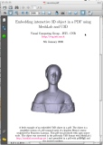 | A snapshot of AcrobatReader displaying a PDF with a U3D model embedded. Support for saving meshes in U3D format is useful for creating, using latex, impressive PDFs with embedded 3D models. You simply need to convert your mesh into u3d format, include the small snip of tex code generated by MeshLab into your latex document and then compile it with pdflatex. Note that the u3d file format is quite compact; for an example this PDF, shown on the left image, contains the 50k triangle mesh of the Laurana's bust and it is squeezed to approx 200 kb. A zip with sources (latex and u3d file) can be found here. Caveat: some pdf previewers (like the macosx 'Preview') do not fully support the pdf standard and do not display embedded 3D objects. Acrobat reader support 3D since version 7. |
 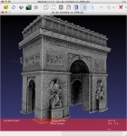
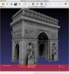
|
A model without and with an ambient occlusion term. The model was photoreconstructed through the free Arc3D web service. |
| 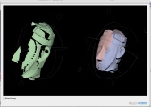 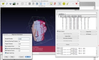 | A couple of snapshot of the new alignment system. |
| Snapshots taken from MeshLab v 1.0.0 | |
| 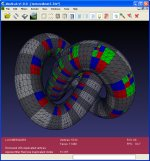 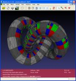 | An example of the new quadric based simplification algorithm that is now able to correctly manage texture coordinateds. New texture coordinates are computed for the vertexes resulting from the edge collpases and texture seams are correctly simplified. Thanks to Marco Pirosu for the development of this plugin. |
| 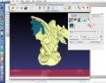 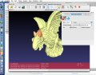 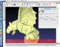 | An example of the new interactive editing features. You can directly paint, with customizable brushes, over the mesh. You can interactively change color (left), define selection (center) and even smooth out noise and small features (right). Thanks to Andreas Gfrei for the development of this plugin. |
| Snapshots taken from MeshLab v 0.9 | |
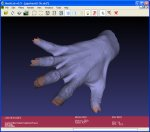

|
An example of the improved hole filling algorithm. Holes with irregularly shaped borders can be successfully closed with (possibly) non self-intersecting patches. |
| Snapshots taken from MeshLab v 0.8 | |
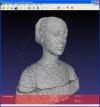  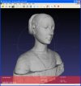 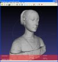 |
An example of automatic noise removal. A mesh with some random noise (left) is smoothed twice (center and right) using a feature preserving two-step smoothing algorithm. |
| 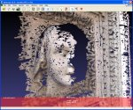 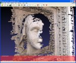 | An example of automatic hole filling. All the holes with a boundary smaller than a given threshold (30 edges in this case) are autmatically filled. |
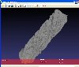  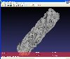 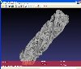 |
An example of the high quality edgecollapse simplification algorithm based on quadric error metrics. A ~1.000.000 triangle mesh (left) is simplified to 100.000 (center) and then up to 10.000 triangles, while maintaining most of its geometric features. |
| Snapshots taken from MeshLab v 0.7 | |
   |
An interactive editing session over the a mesh built a using geometry-from-photo-sequence reconstruction tool developed withing the EPOCH framework. An unwanted part of the mesh is selected and deleted. Original mesh courtesy of the Epoch network. |
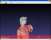   |
An interactive editing session over the 8M tri David model. The bottom part of the mesh is selected and deleted. Original mesh courtesy of Stanford Digital Michelangelo Project. |
 |
One example of real time NPR rendering using a hatching style implemented through a OpenGL shader. The shader was used to create the high res snapshot (2282x2942). |
| Snapshots taken from MeshLab v 0.6 | |
  |
A couple of examples of a OpenGL shaders applied over a 3.7 Mtri model (courtesy of Aim@Shape Shape repository).. |
| Snapshots taken from MeshLab v 0.5 | |
 |
A 10,000,000 face model successfully loaded and ready for inspecting. 3D Model of a Thai statue courtesy of XYZ RGB inc. provided by the Stanford 3D Scanning Repository. |
 |
A textured ply model of the well known Michelangelo David, original mesh courtesy of Stanford Digital Michelangelo Project, texturing done by Visual Computing Lab ISTI - CNR through integration of photos taken during the Restoration of the David. |
 |
A model with self intersecting faces detected by MeshLab colored in red. Mesh courtesy of the Aim@Shape Shape Repository. |
 |
A model with border edges colored in blue. Mesh courtesy of the Shape Repository of Aim@Shape. |
  |
A high resolution snapshot (4400x9110) taken with MeshLab of the 10 Mtri 3D model of the above cited Thai statuette. The snapshot is a 17Mb png, so you can download it using the sourceforge file distribution system. On the right you can see a very small portion of the orginal sample just to give you an idea of the quality of a 40 Mpix image. |
| 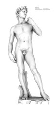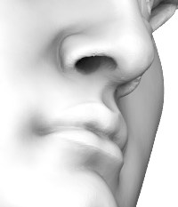 | An high resolution rendering (3200x6424) taken with MeshLab of the 8 Mtri model of the Michelangelo David. Original mesh courtesy of Stanford Digital Michelangelo Project. The model is interactively rendered using a pre-computed ambient occlusion term computed with the open source ShadeVis tool. On the right you can see a very small portion of the original rendering just to give you an idea of the quality of the original 20 Mpix image. |
{kind=link}
{kind=link}
{kind=link}
{kind=link}
{kind=link}
{kind=link}
{kind=link}
{kind=link}
{kind=link}
{kind=link}
{kind=link}
{kind=link}
{kind=link}
{kind=link}
{kind=link}
{kind=link}
{kind=link}